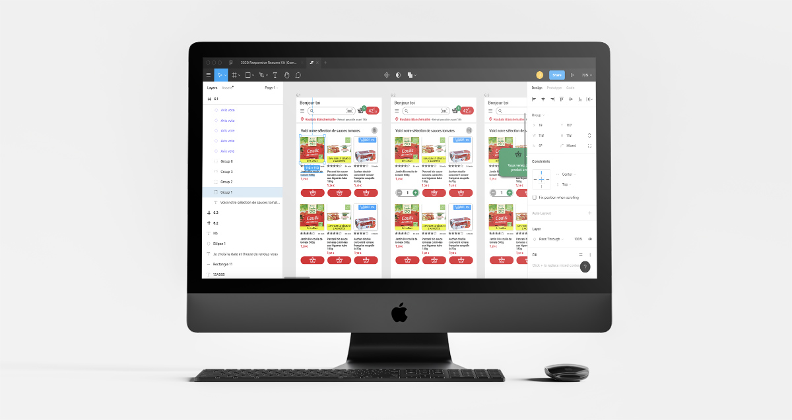

Les "comment pourrions-nous" CPN :
La méthode des CPN est très simple, nous testons l'application Auchan Drive, nous notons d'une manière "Comment pourrions-nous ?" les points de frictions et questionnements sur des post-it ; comme par exemple / CPN améliorer la visibilité du bouton ajout au panier. Une fois terminé, nous regroupons les plus redondants et ensuite nous votons sur ceux qui nous semblent les plus critiques, les plus ennuyeux rencontrés durant le parcours. Une fois les post-it sélectionnés par chacun (2 votes par personne et 4 pour le décideur), ils sont classés par ordre de vote, comme un sapin de noël. Le plus de vote en haut et le moins en bas.
Pour ce projet, nous avons obtenu ses résultats :
- Améliorer l'esthétique (2)
- Améliorer le référencement des produits et rendre le chemin d'accès intuitif (2)
- Rendre l'application simple d'utilisation, fluide, efficace, pratique (2)
- Avoir de meilleurs filtres (1)
- Facilité la navigation (1)
- Facilité le paiement (1)
Une fois le test de l'application Auchan Drive terminé, nous passons au test des applications concurrentes ou similaires. Cette méthode permet de mieux cerner les problèmes qu'on a rencontrés et voir comment les concurrents ont réussi à les résoudres. En plus de cela, nous observons également les bonnes idées à la fois pratiques et graphiques que l'on classe dans un Benchmark. Ici, l'équipe s'est réparti les tâches et avons testé les applications Private Green, Epicery, bibi, chronodrive et jow. Quand chacun a répertorié ses éléments de pistes, nous échangeons entre nous et nous choisissons les meilleurs qui serviront pour la phase de croquis. Mais avant cela, il y a la création du persona et un parcours client type à définir.
Dans cette partie, nous allons définir les points d'entrée et de sortie qui sont respectueusement, de où vient l'utilisateur (peut-être d'un moteur de recherche, d'un conseil, bouche à oreille...) et comment cet utilisateur va être relancer ou informer de son action sur un site ou une application, ici pour ce cas, c'est assez simple car le persona connaît Auchan, car il passe au magasin régulièrement, et ensuite on lui enverra un message de confirmation de commande. Peut-être recevra-t'il une newsletter de promo intéressante par la suite.
Point d'entrée : (de où vient l'utilisateur, les sources ayant attiré le consommateur)
newsletter, connaissance de Auchan.
Point de sortie : (prise de contact après le parcours client)
rappel de la commande et confirmation par mail ou texto
Ensuite pour les pendants, il y a la familiarisation où l'on appâte le client, en montrant qu'on a résolu les problèmes qu'il a rencontrés ; les objectifs où l'on définit ce que l'on souhaite faire ou voir sur l'application et le parcours d'actions qui sera fait, chacun de notre côté, par le groupe, contrairement aux autres points ou persona qui sont faits autour d'une table ensemble.
Pendant - Familiarisation : (qu'est-ce qu'on va me proposer)
présentation des nouvelles fonctions, nouvelle liste de favoris, filtres ultra ciblés, ergonomie améliorée
Pendant - Objectifs :
achat de la semaine, Vegan/Bio, promotion sur mes achats
Une fois cette dernière étape réalisée individuellement, nous les montrons à chacun, nous votons (1 pastille par personne et 2 pour le décideur) ; une fois terminé nous obtenons le parcours d'actions idéal, que nous pouvons agrémenter en piochant dans les autres parcours un élément omis dans le parcours sélectionné.
Pour finir, nous alignons les CPN en dessous des post-it d'actions correspondant à l'étape. Cela permet d'avoir une meilleure visibilité pour la réalisation de croquis.
Pendant - Utilisation : (parcours client défini par des verbes d'actions)
- Je me connecte sur mon compte (ou je suis déjà connecté)
- Je vérifie les nouveautés ou les promotions du moment (surtout le bio)
- Je vérifie la liste que j'ai remplie au fur et à mesure de la semaine, ou la liste habituelle
- Je recherche avec la loupe (recherche) les produits manquants
- J'ajoute à cette liste les produits manquants, possibilité de filtres (avis, sans gluten, vegan, etc)
- Je navigue à travers les rayons pour voir si il ne me manque rien ou si j'ai omis quelque chose
- J'accède à mon panier et je vérifie (liste, prix, quantité, le drive de retrait, la date et heure)
- J'ajoute mon code promo et valide ma commande
Afin de ne pas développer multitude de choses en prototypage, car cela prendrait un temps fou et le résultat ne sera pas aussi bien que les attentes. Nous allons nous focaliser, suite à nos échanges en groupe, sur un type de personne avec des caractéristiques précises, qui sera représenté par Anne. En effet, si nous devons explorer chaque profil de personnes avec des avis divergents, des goûts différents, et des cultures différentes, nous n'y arriverons pas, ce serait trop complexe et personne sera satisfait.
À savoir : Pour définir un persona plus ciblé, correspondant mieux à l'application, nous pouvons faire un sondage (enquête), ou bien utiliser les outils web analytics comme Google Analytics, Test AB, MVT. Dans un cas réel, il faudrait le limiter à cinq personas maximun.
Caractéristiques :
- Anne, habituée du Drive et des magasins, mère active et dynamique de deux enfants, sportive, vegan, qui privilégie les produits bio, et un de ses enfants est tolérant au Gluten
- Contraintes et frustrations : Pas le temps et son temps est précieux car son travail et ses enfants sont très prenants
- Motivations et attentes : Rapidité, faire des économies grâce à des promotions
- Journée type : Anne travaille la semaine, elle fait ses courses durant sa pause déjeuner le midi sur l’application Auchan Drive, et récupère ses achats juste après sa séance de sport en fin de journée
- Personnalité : Réfléchie, responsable, pragmatique, impatiente, timide
- Outils : Mobile
Ici, nous devons scénariser un parcours idéal d'achat, que le persona appliquera à la lettre. Pourquoi ? Afin de ne développer que les parties essentielles au parcours d'achat, d'avoir le parcours le plus simple et le plus rapide pour faire son achat.
Dans ce cas, la cliente, Anne, habituée du Drive, souhaite regarder sur l'application les nouveautés et promotions, “il y a peut-être une offre à ne pas manquer” se dit-elle ;) Car il faut savoir qu'elle est très économe ! Après avoir visionné l'ensemble des offres, elle souhaite récupérer sa liste “achats de la semaine” dans son panier et y ajouter par la suite un coulis de tomate. Elle souhaite après son retrait de marchandise, cuisiner un plat rapide, des pâtes à la sauce tomate ! Yummy. Une fois terminé, Anne va dans son panier d’achats, valide son point de relais, ainsi que l’heure du retrait de marchandise et confirme bien sa commande.
Une fois tout cela en tête, nous les retranscrivons sur papier et dessinons chacun de notre côté les wireframes sur des feuilles blanches avec des post-it représentants un smartphone, qui aura pour finalité, d'obtenir le parcours utilisateur idéal : Screen 1 - Accueil, Screen 2 - Inscription...
Une fois terminé, chacun regarde le parcours de l’autre et vote le parcours qui lui semble idéal.
Ensuite, le facilitateur essaie d’expliquer ce qu’il comprend du parcours, une phase de questions est possible, également, la personne qui a réalisé le parcours peut expliquer au facilitateur si il a mal compris.
Une fois chaque parcours expliqué, il y a un dernier système de vote. Chacun vote les slides (2 slides par personne et 4 pour le décideur) qui lui semble essentiel à ajouter au parcours et donc, adaptés à notre problématique.
Note : Si c’est une création d'application, nous devons dès le début, sélectionner ses slides favorites, une fois cela, le facilitateur explique ce qu’il comprend du parcours de chacun, même procédé, questions et explications. Ensuite il a une seconde phase de vote, 2 slides pour chacun sauf 4 slides pour le décideur.
Pour finir, nous intégrons les slides votés au parcours afin de le rendre optimal. Nous commençons par y remettre de l'ordre et redessinons les différents boards du parcours afin de mettre tout le monde d'accord et que tout le monde parte sur la même base pour la réalisation sur logiciel. Une petite pause n’est pas de refus.
Une fois l’esprit plus libre, nous répartissons les tâches de chacun, c’est-à-dire les pages à prototyper sur Figma, savoir qui prépare les composants Assets, Tab bar, Top bar, styles, typos, charte graphique, etc.
Mais avant tout, il faut choisir son support de développement, ici c’était un iPhone 8 plus, soit un format de 414 x 736 px.



{kind=link}
{kind=link}
{kind=link}
{kind=link}
{kind=link}
{kind=link}
{kind=link}
{kind=link}
{kind=link}
{kind=link}
{kind=link}
{kind=link}
{kind=link}
{kind=link}
{kind=link}
{kind=link}
{kind=link}